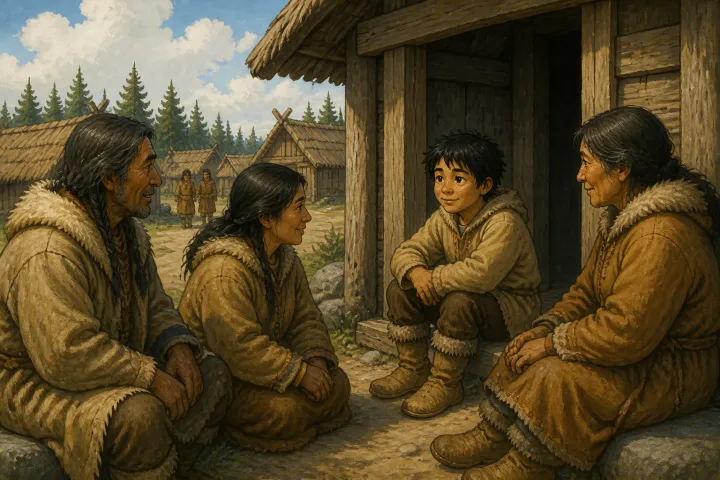
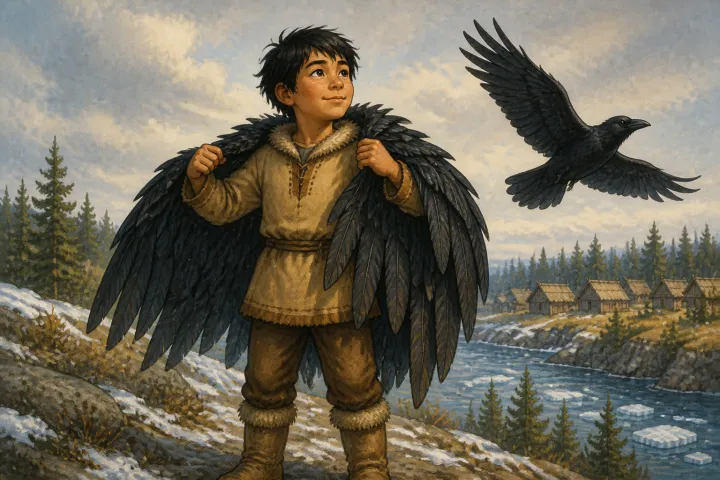
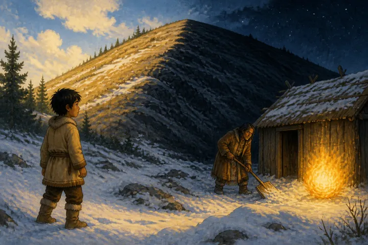
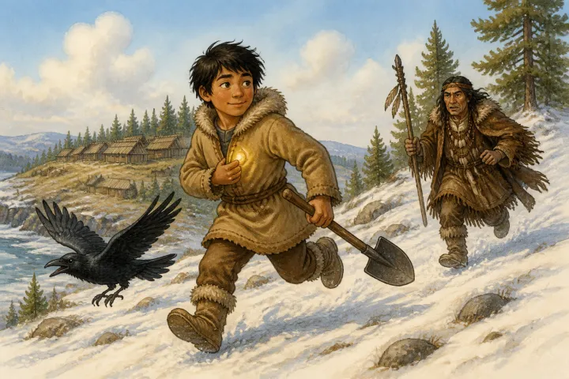
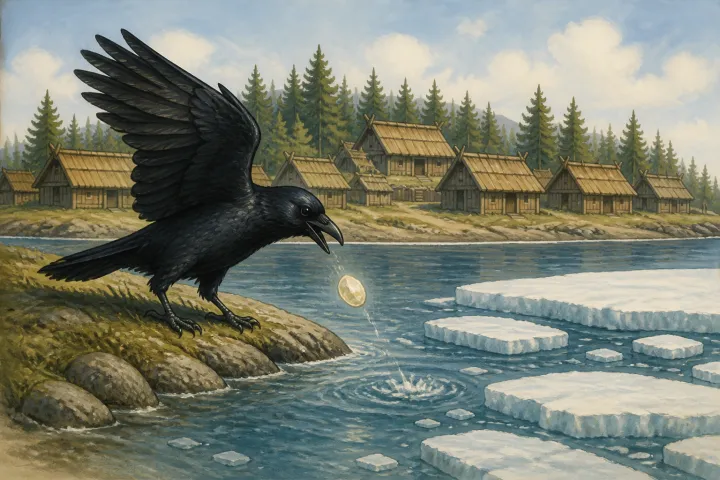

THE BRINGING OF THE LIGHT BY RAVEN
_Eskimo_ (_Lower Yukon_)
In the first days, the sun and moon were in the sky. Then the sun and moon were taken away and people had only the light of the stars. Even the magic of the shamans failed to bring back the light.
Now there was an orphan boy in the village who sat with the humble people over the entrance way of the kashim. He was despised by every one. When the magic of the shamans failed to bring back the sun and moon into the sky the boy mocked them. He said, "What fine shamans you must be. You cannot bring back the light, but I can." Then the shamans were angry and beat that boy and drove him out of the kashim. Now this boy was like any other boy until he put on a raven coat he had. Then he became Raven.

Now the boy went to his aunt's house. He told her the shamans had failed to bring back the light, and they had beaten him when he mocked them. The boy said, "Where are the sun and moon?"
The aunt said, "I do not know."
The boy said, "I am sure you know. Look what a finely sewed coat you wear. You could not sew it that way if you did not know where the light is."
Thus they argued.
Then the aunt said, "If you wish to find the light, go far to the south. Go on snowshoes. You will know the place when you get there."
The boy put on his snowshoes and set off toward the south. Many days he travelled and the darkness was always the same. When he had gone a very long way he saw far in front of him a ray of light. Then the boy hurried on. As he went farther the light showed again, plainer than before. Then it vanished for a time. Thus it kept appearing and vanishing.
At last the boy came to a large hill. One side was brightly lighted; the other side was black as night. Close to the hill was a hut. A man was shovelling snow from in front of it. The man tossed the snow high in the air; then the light could not be seen until the snow fell. Then the man tossed the snow again. So the light kept appearing and disappearing. Close to the house was a large ball of fire.

The boy stopped and began to plan how to steal the ball of light.
Then the boy walked up to the man. He said, "Why do you throw up the snow? It hides the light from our village."
The man said, "I am not hiding the light. I am cleaning away the snow. Who are you? Where did you come from?"
The boy said, "It is so dark at our village I do not want to stay there. I came here to live with you."
"All the time?" asked the man.
"Yes," said the boy.
The man said, "All right. Come into the house with me." Then he dropped his shovel on the ground. He stooped down to lead the way through the underground passage into the house. He let the curtain fall in front of the door as he passed, because he thought the boy was close beside him.
Then the boy caught up the ball of light. He put it in the turned-up flap of his fur coat. Then he picked up the shovel and ran away toward the north. He ran until his feet were tired. Then he put on his raven coat and flew away. He flew rapidly to the north. Raven could

hear the man shriek behind him. The man was pursuing him. But Raven flew faster. Then the man cried, "Keep the light; but give me my shovel."
Raven said, "No, you cannot have your shovel. You made our village dark." So Raven flew faster.
Now as Raven flew, he broke off a little piece of the light. This made day. Then he went on a long time in darkness, until he broke off another piece of light. Thus it was day again. So as Raven flew to the village he broke off the pieces of light. When Raven reached the kashim of his own village he threw away the last piece. He went into the kashim and said to the shamans, "I have brought back the light. It will be light and then dark, so as to make day and night."
After this Raven went out upon the ice because his home was on the seacoast. Then a great wind arose, and the ice drifted with him across the sea to the land on the other side.
Thus Raven brought back the light. It is night and day, as he said it would be. But sometimes the nights are very long because Raven travelled a long way without throwing away a piece of the light.
DAYLIGHT ON THE NASS RIVER
_Tlingit_ (_Wrangell_)
When Raven had grown quite large he walked down the bank of the Nass River one day, until he heard the noise people were making in the darkness as they fished for olachen. Now all the people in the world lived at one place on the Nass River. They had heard that Raven-at-the-head-of-Nass had something called "daylight." They were afraid of it and talked about it a great deal.
Raven shouted to the fishermen, "Why do you make so much noise? If you make so much noise I will bring the daylight here."
Eight canoe-loads of people were fishing there. They said, "You are not Nas-ca-ki-yel. You are not Raven-at-the-head-of-Nass. How can you have the daylight?" They kept on making much noise.
Then Raven opened the box and daylight shot over the world like lightning. They made still more noise. So Raven opened the box wide and there was daylight everywhere.
Then the people were frightened. Some ran into the woods and some jumped into the water. Those that had clothes of fur seal skins jumped into the water; they became seals. Those which had clothing of bear skins, marten skins, and wolf skins, ran into the woods and turned into grizzly bears, martens, and wolves.
THE NAMING OF THE BIRDS
_Tlingit_ (_Wrangell_)
Now Raven went around among the birds, teaching them. He said to Grouse, "You are to live in a place where it is wintry. You will always live in a place high up so you will have plenty of breezes." Then Raven gave Grouse four white pebbles. He said, "You will never starve so long as you have these four pebbles."
Raven also said to Grouse, "You know that Sea-lion is your grandchild. You must get four more pebbles and give them to him." That is why the sea-lion has four large pebbles. It throws these at hunters. If one strikes a person, it kills him. From this story it is known that Grouse and Sea-lion understand each other.
Raven said to Ptarmigan, "You will be the maker of snowshoes. You will know how to travel in snow." It was from these birds that the Athapascans learned how to make snowshoes, and how to put the lacings on.
Raven came next to Wild Canary, that lives all the year around in the Tlingit country. He said, "You will be head among the very small birds. You are not to live on the same food as human beings. Keep away from them."
Then Raven said to Robin, "You will make people happy by your whistle. You will be a good whistler."
Then Raven said to Kun, the Flicker, "You will be chief among the birds of your size. You will not be found in all places. You will seldom be seen."
Raven said to Lugan, a bird that lives far out on the ocean, "You will seldom be seen near shore. You will live on lonely rocks, far out on the ocean."
When Raven came to Snipes, he said, "You will always go in flocks. You will never go out alone." Therefore we always see snipes in flocks.
Raven said to Asq-aca-tci, a small bird with yellow-green plumage,
"You will always go in flocks. You will always be on the tree tops. That is where your food is."
Raven said to a very small bird, Kotlai, the size of a butterfly, "You will be liked. You will be seen only to give good luck. People will hear your voice, but seldom see you."
Then to Blue-jay Raven said, "You will have very fine clothes. You will be a good talker. People will take colors from your clothes."
Then Raven said to Xunkaha, "You will never be seen unless the north wind is going to blow." That is what the name Xunkaha means.
To Crow, Raven said, "You will make lots of noise. You will be great talkers." That is why, when you hear one crow, you hear a lot of others right afterward.
Raven said to Gusyiadul, "You will be seen only when warm weather is coming. Never come near except when warm weather is coming."
To Humming-bird Raven said, "People will enjoy seeing you. If a person sees you once, he will want to see you again."
Raven said to Eagle, "You will be very powerful and above all birds. Your eyesight will be very good. It will be easy for you to get what you want." Then Raven put talons on the eagle and said they would be useful to him.
Thus Raven taught all the birds.
THE ORIGIN OF THE WINDS
_Tlingit_
Now Raven went off to a certain place and created West Wind. Raven said to it, "You shall be my son's daughter. No matter how hard you blow, you shall hurt nobody."
Raven also made South Wind. When South Wind climbs on top of a rock it never ceases to blow.
Raven made North Wind and on top of a mountain he made a house for it with ice hanging down the sides. Then he went in and said to North Wind, "Your back is white." That is why mountains are white with snow.
DURATION OF LIFE
_Tlingit_ (_Wrangell_)
Raven-at-the-head-of-Nass tried to make human beings, at the same time, out of a rock and out of a leaf. But he created human beings out of the leaf first. Then Raven showed a leaf to people. He said, "You see this leaf. You are to be like it. When it falls off the branch and rots there is nothing left of it."
That is why there is death in the world. If men had come from the hard rocks there would be no death. Years ago, when people were getting old, they would say, "It is unlucky that we did not come from the rock. We are made from leaves; therefore we must die."
GHOST TOWN
_Tlingit_ (_Wrangell_)
Once Raven came to a large town which was deserted. Every one seemed to have died. Raven entered the largest house, but he felt some one continually pushing him away. Yet he saw no one there. It was a ghost house. The place was called Ghost Town.
Raven then loaded a canoe with provisions from the empty houses and started to paddle away. He did not notice that a long rope was fastened to the stern of the canoe and to a tree on the shore. When Raven had paddled the length of the rope, the canoe was pulled right back to the beach. All the provisions were carried back to the houses. Yet Raven could see no one. Then a ghost dropped a large stone on Raven's foot. This made him very lame.
